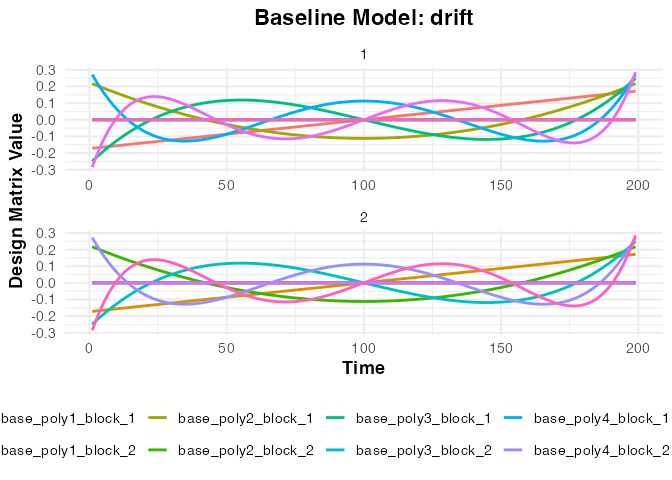
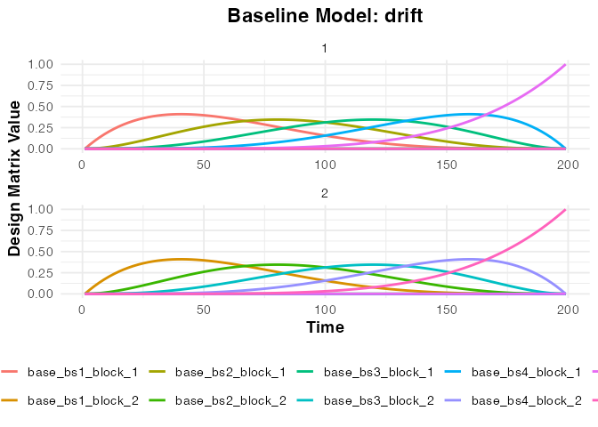
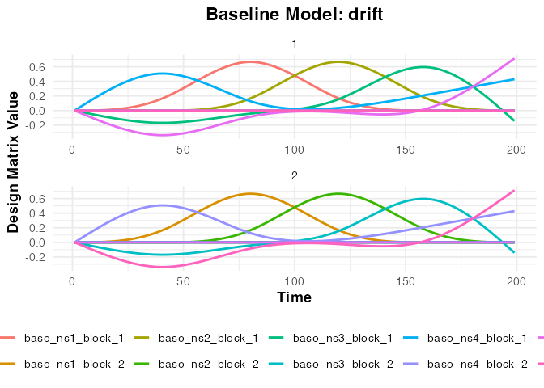
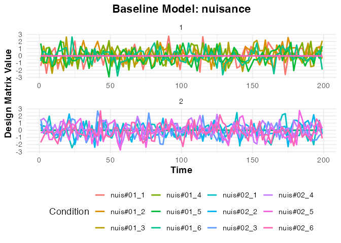

Modeling Baseline and Nuisance Effects
Bradley R. Buchsbaum
2025-06-30
Source:vignettes/a_03_baseline_model.Rmd
a_03_baseline_model.RmdThe Purpose of a Baseline Model
In fMRI analysis, the BOLD signal contains not only task-related activity but also various sources of noise and drift. A baseline model aims to capture and account for this non-neuronal variance, ensuring that estimates of task effects are more accurate.
These baseline regressors typically model low-frequency scanner drift (using basis functions) and other known sources of noise like head motion parameters or physiological fluctuations.
fmrireg uses the baseline_model() function
to construct this part of the design matrix.
Modeling Drift with Basis Functions
A common approach to modeling slow scanner drift is to include a set
of basis functions in the model for each run. fmrireg
supports several basis sets specified via the basis
argument:
-
"poly": Polynomial functions (orthogonalized). Usedegreeorpoly_degreeto specify the order. -
"bs": B-spline basis functions. Usedegreeto specify the number of splines. -
"ns": Natural spline basis functions. Usedegreeto specify the number of splines. -
"constant": Includes only an intercept term for each run.
These basis functions are generated separately for each scanning run
defined in the sampling_frame.
# Define a sampling frame for two runs of 100 scans each, TR=2s
TR <- 2
sframe_raw <- sampling_frame(blocklens = c(100, 100), TR = TR)
# Create an extended sampling frame for plotting
# The baseline_model plot method expects time and blockids fields
sframe <- sframe_raw
sframe$time <- fmrihrf::samples(sframe_raw, global = TRUE)
sframe$blockids <- fmrihrf::blockids(sframe_raw)
# 1. Polynomial Basis (degree 5)
bmodel_poly <- baseline_model(basis = "poly", degree = 5, sframe = sframe)
print(bmodel_poly)
#> ================================================
#> Baseline Model
#> ================================================
#> Drift Components
#> * Name: baseline_poly_5
#> * Basis type: poly
#> * Degree: 5
#> * Drift columns: 10
#>
#> Additional Components
#> * Constant columns: 2
#> * Nuisance columns: 0
#>
#> Model Summary
#> * Total columns: 12
#>
#> Design Matrix Preview
#> -0.171 0.217 -0.249 0.271 ...
#> -0.168 0.204 -0.219 0.217 ...
#> -0.165 0.191 -0.190 0.167 ...
#> ================================================
# 2. B-spline Basis (degree 5)
bmodel_bs <- baseline_model(basis = "bs", degree = 5, sframe = sframe)
# print(bmodel_bs)
# 3. Natural Spline Basis (degree 5)
bmodel_ns <- baseline_model(basis = "ns", degree = 5, sframe = sframe)
# print(bmodel_ns)
# 4. Constant Basis (Intercept only per run)
bmodel_const <- baseline_model(basis = "constant", sframe = sframe)
# print(bmodel_const)Visualizing Baseline Regressors
We can use plot() to visualize the generated regressors.
The function returns a ggplot object.
Term Naming: By default, drift terms are named
baseline_<basis>_<degree> (e.g.,
baseline_poly_5, baseline_bs_3). The constant
term (if present) is named constant, and custom nuisance
regressors are grouped under the term name nuisance.
Plotting Specific Terms: You can plot specific terms
using the term_name argument. The plotting function
supports partial matching, so you can often use shorter names like
"poly", "bs", or "nuisance" if
they uniquely identify a term.
# Plot the polynomial regressors (term is named "drift")
plot(bmodel_poly, term_name = "drift")
# Plot the B-spline regressors
plot(bmodel_bs, term_name = "drift")
# Plot the Natural spline regressors
plot(bmodel_ns, term_name = "drift")
# Plotting the Constant (Intercept) term is generally not informative
# print(bmodel_const) # Shows it has a 'constant' termNotice how the regressors are generated independently for each block
(run) specified in the sampling_frame.
Adding Arbitrary Nuisance Regressors
Beyond structured drift terms, we often want to include other
regressors derived from data (e.g., motion parameters, physiological
recordings, CSF signal). These can be added using the
nuisance_list argument.
Important: The nuisance_list must be a
list where each element corresponds to a scanning run. Each
element should be a data.frame or matrix
containing the nuisance regressors for that specific run. These will be
grouped under the term name "nuisance".
# Simulate nuisance regressors (e.g., 6 motion parameters)
n_scans_run1 <- blocklens(sframe)[1]
n_scans_run2 <- blocklens(sframe)[2]
# Create nuisance data frames for each run
nuis_run1 <- as.data.frame(matrix(rnorm(n_scans_run1 * 6), n_scans_run1, 6))
names(nuis_run1) <- paste0("motion_", 1:6)
nuis_run2 <- as.data.frame(matrix(rnorm(n_scans_run2 * 6), n_scans_run2, 6))
names(nuis_run2) <- paste0("motion_", 1:6)
# Combine into a list
nuisance_regressors <- list(nuis_run1, nuis_run2)
# Create a baseline model including only these nuisance regressors
# (Set basis = NULL, degree = 0 to exclude drift terms)
bmodel_nuis_only <- baseline_model(basis = NULL, degree = 0, sframe = sframe,
nuisance_list = nuisance_regressors)
print(bmodel_nuis_only)
#> ================================================
#> Baseline Model
#> ================================================
#> Drift Components
#> * Name: baseline_constant_1
#> * Basis type: constant
#> * Degree: 1
#> * Drift columns: 2
#>
#> Additional Components
#> * Constant columns: 0
#> * Nuisance columns: 12
#>
#> Model Summary
#> * Total columns: 14
#>
#> Design Matrix Preview
#> 1.000 0.000 -1.400 -0.387 ...
#> 1.000 0.000 0.255 -0.785 ...
#> 1.000 0.000 -2.437 -1.057 ...
#> ================================================
# Plot the nuisance regressors (term_name = "nuisance")
plot(bmodel_nuis_only, term_name = "nuisance") +
labs(title = "Nuisance Regressors Only (e.g., Motion)")
Combining Basis Sets and Nuisance Regressors
You can include both a structured basis set (like polynomials) and custom nuisance regressors in the same baseline model.
bmodel_combined <- baseline_model(basis = "poly", degree = 5, sframe = sframe,
nuisance_list = nuisance_regressors)
print(bmodel_combined)
#> ================================================
#> Baseline Model
#> ================================================
#> Drift Components
#> * Name: baseline_poly_5
#> * Basis type: poly
#> * Degree: 5
#> * Drift columns: 10
#>
#> Additional Components
#> * Constant columns: 2
#> * Nuisance columns: 12
#>
#> Model Summary
#> * Total columns: 24
#>
#> Design Matrix Preview
#> -0.171 0.217 -0.249 0.271 ...
#> -0.168 0.204 -0.219 0.217 ...
#> -0.165 0.191 -0.190 0.167 ...
#> ================================================
# Check the terms included
term_names <- names(terms(bmodel_combined))
print(term_names) # e.g., constant, baseline_poly_5, nuisance
#> [1] "drift" "block" "nuisance"
# baseline_terms(bmodel_combined) # Alias for terms()
# Plot the drift terms (polynomial basis)
plot(bmodel_combined, term_name = "drift") +
labs(title = "Polynomial Drift Terms (from Combined Model)")
# Plot the nuisance terms (using exact match "nuisance")
plot(bmodel_combined, term_name = "nuisance") +
labs(title = "Nuisance Terms (from Combined Model)")Accessing the Design Matrix
The full design matrix for the baseline model (containing all basis
and nuisance regressors, properly formatted per block) can be obtained
using design_matrix().
dmat_baseline <- design_matrix(bmodel_combined)
cat("Dimensions of baseline design matrix:", dim(dmat_baseline), "\n")
#> Dimensions of baseline design matrix: 200 24
cat("Column names:", paste(colnames(dmat_baseline)[1:10], "..."), "\n")
#> Column names: base_poly1_block_1 ... base_poly2_block_1 ... base_poly3_block_1 ... base_poly4_block_1 ... base_poly5_block_1 ... base_poly1_block_2 ... base_poly2_block_2 ... base_poly3_block_2 ... base_poly4_block_2 ... base_poly5_block_2 ...
# head(dmat_baseline[, 1:8]) # Show first few columns
# Visualize the full baseline matrix as a heatmap (optional)
# design_map.baseline_model(bmodel_combined, rotate_x_text = TRUE)This baseline design matrix is combined with the task-related design
matrix (from an event_model) within functions like
fmri_model or fmri_lm to create the complete
design matrix for GLM analysis.